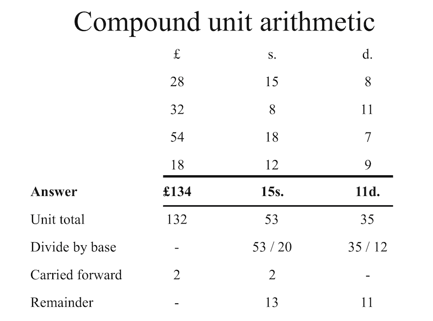
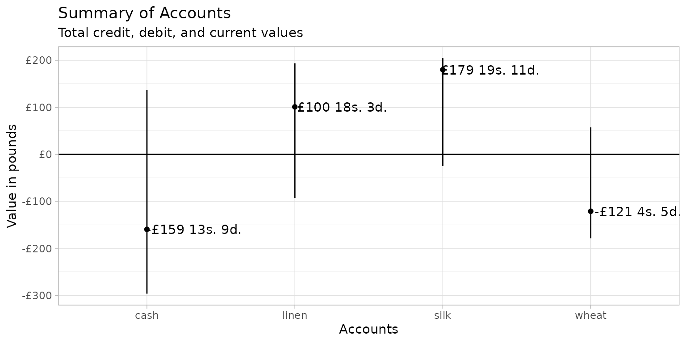

The debkeepr package provides an interface for working with non-decimal currencies that use tripartite or tetrapartite systems such as that of pounds, shillings, and pence. debkeepr makes it easier to perform arithmetic operations on non-decimal values and facilitates the analysis and visualization of larger sets of non-decimal values such as those found in historical account books. This is accomplished through the implementation of the deb_lsd, deb_tetra, and deb_decimal vector types, which are based on the infrastructure provided by the vctrs package. deb_lsd, deb_tetra, and deb_decimal vectors possess additional metadata to allow them to behave like numeric vectors in many circumstances, while also conforming to the workings of non-decimal currencies.
This vignette lays out the behavior of deb_lsd, deb_tetra, and deb_decimal vectors, showing where they overlap, how they can work together, and where they diverge. After a short discussion of the historical background of non-decimal currencies, the basic behavior of the three vector types is laid out. The vignette then covers the workings of the three classes as columns in data frames, including visualizing a small set of example accounts with ggplot2. The overview presented here is extended in two other vignettes that use the data sets included in the debkeepr package. For more in depth examples on performing financial calculations in a variety of non-decimal currencies, see the Transactions in Richard Dafforne’s Journal vignette. For a deeper dive into an analysis of a historical account book using debkeepr, see the Analysis of Richard Dafforne’s Journal and Ledger vignette.
Overview
- All of the functions in
debkeeprbegin with the prefixdeb_, which is short for double-entry bookkeeping. - The nomenclature used throughout the package follows the original Latin terms in using l, s, and d to represent the libra, solidus, and denarius units respectively. These terms were translated into the various European languages.
- English: pounds, shillings, pence
- French: livres, sols or sous, deniers
- Italian: lire, soldi, denari
- Flemish: ponden, schellingen, groten
- Dutch: guilders, stuivers, penningen
- With tetrapartite values the package uses f to represent the farthing unit.
-
debkeeprcontains two data sets from the practice journal and ledger in the third edition of Richard Dafforne’s Merchant’s Mirrour from 1660. Dafforne’s text taught the practices of double-entry bookkeeping and provided a full set of account books to be used for educational purposes.-
dafforne_transactionsis a transactions data frame with 177 transactions. -
dafforne_accountspossesses information about the 46 accounts in the journal and ledger.
-
Historical background
The tripartite non-decimal system of pounds, shillings, and pence dates back to the Carolingian Empire of Charlemagne. The primary coin used in the Late Roman Empire was the golden solidus, introduced by Constantine in 309. However, the shrinking of the economy and the political splintering that occurred after the fall of the western Roman Empire diminished the need for gold coins. In the 6th century, the Frankish rulers who took over the Roman mints reacted by creating triens or tremissis, smaller gold coins worth one-third of a solidus. From this point, the solidus was no longer produced as a coin in the western kingdoms. Instead, it continued as a unit of account equivalent to three trientes. In the 7th century even devalued golden trientes proved to be too valuable for the economic needs of the time. Frankish rulers began to produce silver coins based on the size and weight of the triens. The new silver penny was called a denarius, linking it to the old silver coin used in the Roman Republic. The silver penny provided the basis for the monetary system of Western Europe until the revival of gold coins in the 14th century.
As the silver denarius overtook the golden triens, the triens became a unit of account equivalent to four denarii. In this way the solidus transformed into a unit of account representing 12 denarii, even if 12 silver denarii of the 8th century would not have been equivalent to the pure gold solidus of the Late Roman Empire. The use of the libra as a third unit of account derived from the number of silver denarii struck from a pound, or libra, of silver. Though the actual number of coins made from a pound of silver differed over time, the rate of 240 coins struck from a libra lasted long enough to become fossilized in much of Europe.1 The custom of counting coins in dozens (solidi) and scores of dozens (librae) spread throughout the Carolingian Empire and became ingrained in much of Europe. However, by the time that Richard Dafforne wrote on the practice of double-entry bookkeeping in the middle of the seventeenth century, a huge variety of monies of accounts had developed across Europe and beyond, and though many used the 1:20:240 ratios, others used a diversity of bases to represent the solidus and denarius units.2 The addition of multiple larger and smaller coins also led some currencies to adopt a fourth unit, creating tetrapartite values.
Introducing the debkeepr vector types
debkeepr introduces three vector types to help deal with two interrelated problems inherent in historical currencies. Firstly, historical currencies consisted of three or four separate non-decimal units: pounds, shillings, pence, and optionally a fourth unit such as the farthing. Secondly, the bases of the shillings, pence, and optional farthings units differed by region, coinage, and era. In other words, the actual value represented by say £3 13s. 4d. cannot be determined without knowing the bases of the shillings and pence units.3 The deb_lsd type maintains the tripartite structure of non-decimal currencies and provides a bases attribute to record the bases for the shillings and pence units. The deb_tetra type extends the concept of the deb_lsd type to incorporate currencies and other types of values that consist of four units. The deb_decimal type represents both tripartite and tetrapartite currencies in decimalized form. However, it differs from simply converting the value to a numeric vector by tracking the bases of the units and the unit represented in decimalized form (libra, solidus, denarius, and farthing in tetrapartite values) through the bases and unit attributes. Thus, though deb_lsd, deb_tetra, and deb_decimal vectors will be nominally different, they can represent the same values and currency if the bases are equivalent.4 The print methods for both types show the bases attribute, and deb_decimal vectors include the unit.
debkeepr vectors can be created with the deb_lsd(), deb_tetra(), and deb_decimal() functions. In addition to arguments for the pounds, shillings, and pence values, deb_lsd() has an argument for the bases of the shillings and pence units, which defaults to the most common bases of 20 shillings to the pound and 12 pence to the shilling: c(20, 12). deb_tetra() works similarly but adds a farthings argument and calls for bases of length three with a default of c(20, 12, 4). deb_decimal() has the same argument and default for the bases and an additional argument to choose the unit for the decimalized values that defaults to the pounds unit: "l". To create a tetrapartite deb_decimal vector the bases argument should be a numeric vector of length three. Tetrapartite deb_decimal vectors can also be represented by the "f" unit.
library(debkeepr)
# Create deb_lsd vector of length 3 with default bases
(lsd <- deb_lsd(l = c(17, 32, 18),
s = c(13, 11, 10),
d = c(11, 8, 5)))
#> <deb_lsd[3]>
#> [1] 17:13s:11d 32:11s:8d 18:10s:5d
#> # Bases: 20s 12d
# Create deb_tetra vector of length 3 with default bases
(tetra <- deb_tetra(l = c(17, 32, 18),
s = c(13, 11, 10),
d = c(11, 8, 5),
f = c(3, 2, 1)))
#> <deb_tetra[3]>
#> [1] 17:13s:11d:3f 32:11s:8d:2f 18:10s:5d:1f
#> # Bases: 20s 12d 4f
# Create deb_decimal vector of length 3 with default bases and unit
(dec <- deb_decimal(x = c(15.825, 19.25, 9.6125)))
#> <deb_decimal[3]>
#> [1] 15.8250 19.2500 9.6125
#> # Unit: libra
#> # Bases: 20s 12d
# Express the same values in solidus and denarius units
(dec_s <- deb_decimal(x = c(316.5, 385, 192.25), unit = "s"))
#> <deb_decimal[3]>
#> [1] 316.50 385.00 192.25
#> # Unit: solidus
#> # Bases: 20s 12d
(dec_d <- deb_decimal(x = c(3798, 4620, 2307), unit = "d"))
#> <deb_decimal[3]>
#> [1] 3798 4620 2307
#> # Unit: denarius
#> # Bases: 20s 12d
# The same value as a tetrapartite value
(dec_tetra <- deb_decimal(x = c(15.825, 19.25, 9.6125),
bases = c(20, 12, 4)))
#> <deb_decimal[3]>
#> [1] 15.8250 19.2500 9.6125
#> # Unit: libra
#> # Bases: 20s 12d 4fThe bases argument makes it possible to create debkeepr vectors that represent currencies that use non-standard bases for the shillings, pence, and optionally farthings units such as the Polish florin found in Dafforne’s practice journal of 30 gros of 18 denars.
# Create deb_lsd vector of length 3 with bases of Polish florin
(lsd_polish <- deb_lsd(l = c(32, 12, 26),
s = c(15, 1, 20),
d = c(5, 13, 8),
bases = c(30, 18)))
#> <deb_lsd[3]>
#> [1] 32:15s:5d 12:1s:13d 26:20s:8d
#> # Bases: 30s 18d
# Create deb_decimal vector of length 3 with bases of Polish florin
(dec_polish <- deb_decimal(x = c(15.825, 19.25, 9.6125),
bases = c(30, 18)))
#> <deb_decimal[3]>
#> [1] 15.8250 19.2500 9.6125
#> # Unit: libra
#> # Bases: 30s 18dOr you might want to record a set of avoirdupois weights recorded in the tetrapartite system of the ton of twenty hundredweight, the hundredweight of four quarters, and the quarter of 28 pounds.
# Create a deb_tetra vector to represent avoirdupois weight
deb_tetra(l = c(1, 0, 1),
s = c(11, 18, 3),
d = c(1, 0, 3),
f = c(12, 20, 17),
bases = c(20, 4, 28))
#> <deb_tetra[3]>
#> [1] 1:11s:1d:12f 0:18s:0d:20f 1:3s:3d:17f
#> # Bases: 20s 4d 28fAdvantages and disadvantages of the debkeepr types
Why three different classes to represent the same basic information? The goal of debkeepr is to integrate tripartite and tetrapartite non-decimal currencies into the decimalized world of R. The deb_lsd and deb_tetra types do this while maintaining the multipartite structure of historical non-decimal currencies, but there remain certain limitations to such an approach. The deb_decimal class helps to minimize these limitations. The following list provides an overview of the differences of the three classes that are discussed in further detail in the rest of the vignette.
- The
deb_lsdanddeb_tetratypes have the advantage of maintaining the structure and values used by non-decimal currencies, making it easier to identify and present such values. -
deb_decimalimplements a wider array of mathematical functions and arithmetic operations thandeb_lsdanddeb_tetra. - You can move between the three types without losing any data through
deb_as_lsd(),deb_as_tetra, anddeb_as_decimal()casting methods. - Because
deb_lsd,deb_tetra, anddeb_decimalare based on the vctrs package, all act as expected in data frames or tibbles columns. From dplyr 1.0.0 — which is the minimal version used by debkeepr — all dplyr functions work on bothdebkeeprtypes. -
ggplot2 does not know how to pick a scale for
deb_lsdordeb_tetravectors. In contrast,deb_decimalvectors work properly withggplot2, though explicitly identifying the scale as continuous — withscale_y_continuous()orscale_x_continuous()— is needed to avoid the appearance of a message. -
deb_lsd,deb_tetra, anddeb_decimalvectors cannot be combined in a single function if theirbasesdiffer. Tripartite and tetrapartite values can be combined if the bases of their solidus and denarius bases match. The only way to transform the bases ofdeb_lsd,deb_tetra, anddeb_decimalvectors is explicitly withdeb_convert_bases(). This prevents mistakenly combining two different currencies together without properly converting their values.
Coercion and casting
One of the most basic activities when working with vectors is combining vectors of the same or similar classes or converting a vector from one class to another. Coercion occurs when vectors are converted implicitly, such as with c(). Casting denotes explicit conversion with functions that usually begin with as, such as as.numeric() or as.character(). The debkeepr classes follow a hierarchy in which numeric() coerces to deb_decimal() coerces to deb_tetra() coerces to deb_lsd(). Coercion with any other type of vector fails.5 debkeepr also implements casting methods between deb_lsd and deb_decimal vectors, to and from numeric vectors and lists of numeric vectors, and to character vectors.
Coercion
Coercion hierarchy: numeric() -> deb_decimal() -> deb_tetra() -> deb_lsd().
# Combine deb_lsd and deb_lsd
c(lsd, deb_lsd(l = 5, s = 13, d = 4))
#> <deb_lsd[4]>
#> [1] 17:13s:11d 32:11s:8d 18:10s:5d 5:13s:4d
#> # Bases: 20s 12d
# Combine deb_decimal and deb_decimal
num <- 17 / 3
c(dec, deb_decimal(num))
#> <deb_decimal[4]>
#> [1] 15.825000 19.250000 9.612500 5.666667
#> # Unit: libra
#> # Bases: 20s 12d
c(dec_s, deb_decimal(num, unit = "s"))
#> <deb_decimal[4]>
#> [1] 316.500000 385.000000 192.250000 5.666667
#> # Unit: solidus
#> # Bases: 20s 12d
# Combine deb_lsd, deb_tetra, deb_decimal, and numeric
c(lsd, tetra, dec, num)
#> <deb_lsd[10]>
#> [1] 17:13s:11d 32:11s:8d 18:10s:5d 17:13s:11.75d 32:11s:8.5d
#> [6] 18:10s:5.25d 15:16s:6d 19:5s:0d 9:12s:3d 5:13s:4d
#> # Bases: 20s 12dTripartite and tetrapartite vectors can be combined so long as the solidus and denarius bases are equivalent. Otherwise and error is thrown. Tetrapartite values are always coerced to tripartite. Thus, deb_tetra coerces to deb_lsd and tetrapartite deb_decimal coerces to tripartite deb_decimal. This is because the equivalency of the farthings unit is only implied.
# deb_lsd and deb_tetra with same s and d units
c(lsd, tetra)
#> <deb_lsd[6]>
#> [1] 17:13s:11d 32:11s:8d 18:10s:5d 17:13s:11.75d 32:11s:8.5d
#> [6] 18:10s:5.25d
#> # Bases: 20s 12d
# Tetrapartite deb_decimal coerces to tripartite deb_decimal
c(dec_tetra, dec)
#> <deb_decimal[6]>
#> [1] 15.8250 19.2500 9.6125 15.8250 19.2500 9.6125
#> # Unit: libra
#> # Bases: 20s 12dIt is also possible to combine deb_decimal vectors that have a different unit so long as their bases are equivalent.6 This follows a set hierarchy that moves towards the higher unit: farthing ("f") -> denarius ("d") -> solidus ("s") -> libra ("l").
# farthing -> denarius
c(deb_decimal(x = 5440, unit = "f", bases = c(20, 12, 4)), dec_d)
#> <deb_decimal[4]>
#> [1] 1360 3798 4620 2307
#> # Unit: denarius
#> # Bases: 20s 12d
# denarius -> solidus
c(deb_decimal(x = 1360, unit = "d"), dec_s)
#> <deb_decimal[4]>
#> [1] 113.3333 316.5000 385.0000 192.2500
#> # Unit: solidus
#> # Bases: 20s 12d
# denarius -> libra
c(deb_decimal(x = 1360, unit = "d"), dec)
#> <deb_decimal[4]>
#> [1] 5.666667 15.825000 19.250000 9.612500
#> # Unit: libra
#> # Bases: 20s 12d
# solidus -> libra
c(deb_decimal(x = 340 / 3, unit = "s"), dec)
#> <deb_decimal[4]>
#> [1] 5.666667 15.825000 19.250000 9.612500
#> # Unit: libra
#> # Bases: 20s 12dCare needs to be taken when combining deb_lsd, deb_tetra, and/or deb_decimal vectors with a base R class using c(); c(deb_lsd(), numeric()) is not equal to c(numeric(), deb_lsd()). c() does not find the common class for the vectors if the first element is a base class. Instead, it forces vectors to conform to its internal hierarchy by stripping attributes. Thus, c(numeric(), deb_lsd()) results in a list with the underlying data of deb_lsd(), and c(numeric(), deb_decimal()) produces a numeric vector. This can be avoided with the use of vec_c() from the vctrs package, which first finds the common class for all elements.7
# Incorrect results with base class as first element
c(num, lsd)
#> [[1]]
#> [1] 5.666667
#>
#> $l
#> [1] 17 32 18
#>
#> $s
#> [1] 13 11 10
#>
#> $d
#> [1] 11 8 5
c(num, dec)
#> [1] 5.666667 15.825000 19.250000 9.612500
# Consistent with vec_c()
library(vctrs)
vec_c(num, lsd)
#> <deb_lsd[4]>
#> [1] 5:13s:4d 17:13s:11d 32:11s:8d 18:10s:5d
#> # Bases: 20s 12d
vec_c(num, dec)
#> <deb_decimal[4]>
#> [1] 5.666667 15.825000 19.250000 9.612500
#> # Unit: libra
#> # Bases: 20s 12dAn important aspect of debkeepr vectors is that they cannot be combined in a single function call if they have incompatible bases. Vectors with mismatched bases represent different currencies or value systems and so cannot be combined without the user performing an exchange between the two systems Tripartite and tetrapartite values can be combined if the bases of their solidus and denarius bases match, since the addition of another unit does not affect the underlying value. The only way to transform the bases of debkeepr vectors is explicitly with deb_convert_bases(), as shown in greater detail below.
# Cannot combine vectors with incompatible bases
c(lsd, lsd_polish)
#> Error:
#> ! Incompatible `bases`.
#> ℹ `bases` must be compatible to combine <deb_lsd>, <deb_tetra>, or
#> <deb_decimal> vectors.
#> ✖ Cannot combine: `..1` <deb_lsd> vector with `bases` s = 20 and d = 12.
#> ✖ Cannot combine: `..2` <deb_lsd> vector with `bases` s = 30 and d = 18.
#> ℹ Use `deb_convert_bases()` to convert one or more of the vectors to compatible
#> `bases`.
c(tetra, lsd_polish)
#> Error:
#> ! Incompatible `bases`.
#> ℹ `bases` of the 's' and 'd' units must be equal to combine <deb_lsd>,
#> <deb_tetra>, or <deb_decimal> vectors.
#> ✖ Cannot combine: <deb_lsd> vector with `bases` s = 30 and d = 18.
#> ✖ Cannot combine: <deb_tetra> vector with `bases` s = 20 and d = 12.
#> ℹ Use `deb_convert_bases()` to convert one or more of the vectors to compatible
#> `bases`.
c(dec, dec_polish)
#> Error:
#> ! Incompatible `bases`.
#> ℹ `bases` must be compatible to combine <deb_lsd>, <deb_tetra>, or
#> <deb_decimal> vectors.
#> ✖ Cannot combine: `..1` <deb_decimal> vector with `bases` s = 20 and d = 12.
#> ✖ Cannot combine: `..2` <deb_decimal> vector with `bases` s = 30 and d = 18.
#> ℹ Use `deb_convert_bases()` to convert one or more of the vectors to compatible
#> `bases`.Casting
Whereas coercion occurs implicitly, casting explicitly changes the class of a vector. debkeepr vectors can be cast to and from each other, to and from numeric vectors, and to character vectors. A list of numeric vectors of length three or four can also be cast to deb_lsd, deb_tetra, and deb_decimal, while deb_lsd and deb_tetra vectors can be cast back to a list of numeric vectors. Because the deb_lsd and deb_tetra types have different capabilities from their equivalent deb_decimal type, casting between the classes without any loss of metadata is important. The ability to cast debkeepr vectors to and from numeric vectors, or lists of numeric vectors provides an outlet for any missing functionality in the three debkeepr types. The drawback to casting between debkeepr types and numeric is that the user needs to keep track of the bases and unit on their own. Finally, casting to a character vector provides a simple outlet to print values, but, for presentation of the data, deb_text() provides a more flexible manner to nicely format debkeepr vectors.
-
deb_lsd()to … -
deb_tetra()to … -
deb_decimal()to … -
numeric()to … -
list()ofnumeric()vectors of length 3 or 4 to …
# Cast between deb_lsd, deb_tetra, and deb_decimal
deb_as_lsd(tetra)
#> <deb_lsd[3]>
#> [1] 17:13s:11.75d 32:11s:8.5d 18:10s:5.25d
#> # Bases: 20s 12d
deb_as_tetra(lsd, f = 4)
#> <deb_tetra[3]>
#> [1] 17:13s:11d:0f 32:11s:8d:0f 18:10s:5d:0f
#> # Bases: 20s 12d 4f
deb_as_decimal(lsd)
#> <deb_decimal[3]>
#> [1] 17.69583 32.58333 18.52083
#> # Unit: libra
#> # Bases: 20s 12d
deb_as_decimal(tetra)
#> <deb_decimal[3]>
#> [1] 17.69896 32.58542 18.52187
#> # Unit: libra
#> # Bases: 20s 12d 4f
# unit is automatically taken into account
deb_as_lsd(dec_s)
#> <deb_lsd[3]>
#> [1] 15:16s:6d 19:5s:0d 9:12s:3d
#> # Bases: 20s 12d
# Can cast to any unit of deb_decimal
deb_as_decimal(lsd, unit = "s")
#> <deb_decimal[3]>
#> [1] 353.9167 651.6667 370.4167
#> # Unit: solidus
#> # Bases: 20s 12d
deb_as_decimal(tetra, unit = "f")
#> <deb_decimal[3]>
#> [1] 16991 31282 17781
#> # Unit: farthing
#> # Bases: 20s 12d 4f
# Cast to and from numeric
deb_as_lsd(c(15.825, 19.25, 9.6125))
#> <deb_lsd[3]>
#> [1] 15:16s:6d 19:5s:0d 9:12s:3d
#> # Bases: 20s 12d
deb_as_tetra(c(15.825, 19.25, 9.6125))
#> <deb_tetra[3]>
#> [1] 15:16s:6d:0f 19:5s:0d:0f 9:12s:3d:0f
#> # Bases: 20s 12d 4f
deb_as_decimal(c(15.825, 19.25, 9.6125))
#> <deb_decimal[3]>
#> [1] 15.8250 19.2500 9.6125
#> # Unit: libra
#> # Bases: 20s 12d
as.numeric(lsd)
#> [1] 17.69583 32.58333 18.52083
as.numeric(tetra)
#> [1] 17.69896 32.58542 18.52187
as.numeric(dec)
#> [1] 15.8250 19.2500 9.6125
# Cast to character
as.character(lsd)
#> [1] "17:13s:11d" "32:11s:8d" "18:10s:5d"
as.character(tetra)
#> [1] "17:13s:11d:3f" "32:11s:8d:2f" "18:10s:5d:1f"
as.character(dec)
#> [1] "15.825" "19.25" "9.6125"Casting to and from lists of numeric vectors of length three or four provides an alternate method to creating debkeepr vectors that might be more readable. Think of the difference between tibble::tibble() and tibble::tribble(). Whereas deb_lsd() and deb_tetra() is structured in terms of units, using a list of numeric vectors keeps the units of a single value together. Compare:
# deb_lsd()
deb_lsd(l = c(17, 32, 18),
s = c(13, 11, 10),
d = c(11, 8, 5))
#> <deb_lsd[3]>
#> [1] 17:13s:11d 32:11s:8d 18:10s:5d
#> # Bases: 20s 12d
# Cast from list to deb_lsd()
list(c(17, 13, 11),
c(32, 11, 8),
c(18, 10, 5)) %>%
deb_as_lsd()
#> <deb_lsd[3]>
#> [1] 17:13s:11d 32:11s:8d 18:10s:5d
#> # Bases: 20s 12dNotice that the input structure of the list more closely aligns with the output. This makes casting lists of numeric vectors to debkeepr types a nice alternative if you need to input data manually.
Normalization
At the heart of debkeepr’s attempt to simplify calculations of non-decimal currencies and integrate them into the structure of R is the concept of normalization. Normalization is the process of converting a set of compound units to a standard form consistent with the bases for each unit in a manner similar to “carrying over” digits in decimal arithmetic. Even the simplest arithmetic operations can be tricky with non-decimal currencies, especially for those schooled in decimal arithmetic. For example, adding together a set of values by hand might result in the non-standard form of £132 53s. 35d. in a tripartite currency with the standard bases of 20 shillings per pound and 12 pence per shilling. Normalizing the value by performing integer division on the shillings and pence values by their respective bases, keeping the remainder, and carrying over the quotient to the next unit results in the standardized value of £134 15s. 11d. The process is not difficult, but it is cumbersome and error prone.

debkeepr simplifies the procedure with the deb_normalize() function and implements normalization on all mathematical operations with deb_lsd and deb_tetra vectors, ensuring that normalized values are always returned. For one off calculations, deb_normalize() also accepts numeric vectors of length three or four, which is essentially a short cut for deb_normalize(deb_lsd(l, s, d)) and deb_normalize(deb_tetra(l, s, d, f)).
# Normalize tripartite value: £132 53s. 35d.
x <- deb_lsd(132, 53, 35)
deb_normalize(x)
#> <deb_lsd[1]>
#> [1] 134:15s:11d
#> # Bases: 20s 12d
# Normalize tetrapartite value: £132 53s. 35d. 21f.
y <- deb_tetra(132, 53, 35, 21)
deb_normalize(y)
#> <deb_tetra[1]>
#> [1] 134:16s:4d:1f
#> # Bases: 20s 12d 4f
# Normalize numeric vector
deb_normalize(c(132, 53, 35))
#> <deb_lsd[1]>
#> [1] 134:15s:11d
#> # Bases: 20s 12d
# The process is the same for non-standard bases such as Polish florin
# Compare this to deb_normalize(x)
deb_lsd(132, 53, 35, bases = c(30, 18)) %>%
deb_normalize()
#> <deb_lsd[1]>
#> [1] 133:24s:17d
#> # Bases: 30s 18dArithmetic
debkeepr implements a wide array of mathematical functions and arithmetic operations for the deb_lsd, deb_tetra, and deb_decimal types. The deb_decimal type implements methods for the full range of the Summary and Math group generics, while deb_lsd and deb_tetra does so for a select subset of these functions. The primary functions that are not implemented for either class include median(), quantile(), and summary(). deb_lsd, deb_tetra, deb_decimal, and numeric vectors can be combined in mathematical functions and follow the same coercion hierarchy: numeric() -> deb_decimal() -> deb_tetra() -> deb_lsd(). Most of the mathematical functions act as expected with deb_lsd and deb_tetra vectors. One exception is the round family of functions, which act on the denarius unit in deb_lsd vectors and the farthings unit in deb_tetra vectors. As always, debkeepr vectors with incompatible bases cannot be combined in either mathematical functions or arithmetic operations.
Implemented mathematical functions for deb_lsd and deb_tetra vectors
- Summary group:
sum(),any(), andall(). - Math group:
abs(),round(),signif(),ceiling(),floor(),trunc(),cummax(),cummin(), andcumsum(). - Additional generics:
mean(),is.nan(),is.finite(), andis.infinite().
# Mathematical functions
sum(lsd)
#> <deb_lsd[1]>
#> [1] 68:16s:0d
#> # Bases: 20s 12d
sum(tetra)
#> <deb_tetra[1]>
#> [1] 68:16s:1d:2f
#> # Bases: 20s 12d 4f
sum(dec)
#> <deb_decimal[1]>
#> [1] 44.6875
#> # Unit: libra
#> # Bases: 20s 12d
sum(lsd, tetra, dec)
#> <deb_lsd[1]>
#> [1] 182:5s:10.5d
#> # Bases: 20s 12d
mean(lsd)
#> <deb_lsd[1]>
#> [1] 22:18s:8d
#> # Bases: 20s 12d
# Round works on denarius unit of deb_lsd vector and is normalized
round(deb_lsd(9, 19, 11.825))
#> <deb_lsd[1]>
#> [1] 10:0s:0d
#> # Bases: 20s 12dArithmetic operations with debkeepr vectors
deb_lsd, deb_tetra, deb_decimal, and numeric vectors can be combined in various ways in arithmetic operations, producing different results depending on the input types and the operation performed. Note in particular that a wider range of operators can be used with deb_decimal and numeric vectors than deb_lsd and numeric or deb_tetra and numeric vectors.8
-
deb_lsd() -
deb_tetra()-
deb_tetra()anddeb_tetra():+,-, and/- The first two return
deb_tetra(); the last returnsnumeric().
- The first two return
-
deb_tetra()andnumeric():*and/- Both return
deb_tetra().
- Both return
-
numeric()anddeb_tetra():*and/- Returns
deb_tetra().
- Returns
-
-
deb_decimal()-
deb_decimal()anddeb_decimal():+,-, and/ -
deb_decimal()andnumeric():+,-,/,*,^,%%, and%/%- All return
deb_decimal().
- All return
-
numeric()anddeb_decimal():+,-,*and/- All return
deb_decimal().
- All return
-
-
debkeeprvectors-
deb_lsd()anddeb_tetra():+,-, and/ -
deb_lsd()anddeb_decimal():+,-, and/ -
deb_tetra()anddeb_decimal():+,-, and/- The first two return
deb_tetra(); the last returnsnumeric().
- The first two return
-
# deb_lsd and deb_lsd
deb_lsd(15, 15, 9) + deb_lsd(6, 13, 4)
#> <deb_lsd[1]>
#> [1] 22:9s:1d
#> # Bases: 20s 12d
deb_lsd(15, 15, 9) / deb_lsd(6, 13, 4)
#> [1] 2.368125
# deb_tetra and deb_tetra
deb_tetra(15, 15, 9, 3) + deb_tetra(6, 13, 4, 2)
#> <deb_tetra[1]>
#> [1] 22:9s:2d:1f
#> # Bases: 20s 12d 4f
# deb_decimal and deb_decimal
deb_decimal(15.7875) - deb_decimal(20 / 3)
#> <deb_decimal[1]>
#> [1] 9.120833
#> # Unit: libra
#> # Bases: 20s 12d
# deb_lsd, deb_tetra, deb_decimal, and numeric
deb_lsd(6, 13, 4) / 2
#> <deb_lsd[1]>
#> [1] 3:6s:8d
#> # Bases: 20s 12d
deb_tetra(15, 15, 9, 3) / 2
#> <deb_tetra[1]>
#> [1] 7:17s:10d:3.5f
#> # Bases: 20s 12d 4f
deb_decimal(15.7875) + 5.25
#> <deb_decimal[1]>
#> [1] 21.0375
#> # Unit: libra
#> # Bases: 20s 12d
18 - deb_decimal(20 / 3)
#> <deb_decimal[1]>
#> [1] 11.33333
#> # Unit: libra
#> # Bases: 20s 12d
deb_decimal(15.7875) * 3
#> <deb_decimal[1]>
#> [1] 47.3625
#> # Unit: libra
#> # Bases: 20s 12d
# deb_lsd, deb_tetra, and deb_decimal
deb_lsd(15, 15, 9) + deb_tetra(6, 13, 4, 2)
#> <deb_lsd[1]>
#> [1] 22:9s:1.5d
#> # Bases: 20s 12d
deb_lsd(15, 15, 9) + deb_decimal(20 / 3)
#> <deb_lsd[1]>
#> [1] 22:9s:1d
#> # Bases: 20s 12d
deb_lsd(15, 15, 9) / deb_decimal(15.7875)
#> [1] 1Equality and comparison
Closely related to mathematical functions and arithmetic operations is the task of testing equality and comparing different vectors. debkeepr permits testing equality and comparison between deb_lsd, deb_tetra, deb_decimal, and numeric vectors. It is possible to compare deb_decimal vectors with different units, but doing so with vectors of incompatible bases will throw an error.
# Comparison
deb_lsd(15, 15, 9) < deb_lsd(6, 13, 4)
#> [1] FALSE
deb_lsd(15, 15, 9) < deb_tetra(6, 13, 4, 2)
#> [1] FALSE
deb_lsd(15, 15, 9) == deb_decimal(15.7875)
#> [1] TRUE
deb_lsd(6, 13, 4) > 23.5
#> [1] FALSE
deb_decimal(15.7875) < deb_decimal(3390, unit = "d")
#> [1] FALSE
# Cannot compare vectors with different bases
deb_lsd(15, 15, 9) > lsd_polish
#> Error:
#> ! Incompatible `bases`.
#> ℹ `bases` must be compatible to combine <deb_lsd>, <deb_tetra>, or
#> <deb_decimal> vectors.
#> ✖ Cannot combine: `..1` <deb_lsd> vector with `bases` s = 20 and d = 12.
#> ✖ Cannot combine: `..2` <deb_lsd> vector with `bases` s = 30 and d = 18.
#> ℹ Use `deb_convert_bases()` to convert one or more of the vectors to compatible
#> `bases`.
# Maximum and minimum
max(lsd)
#> <deb_lsd[1]>
#> [1] 32:11s:8d
#> # Bases: 20s 12d
min(dec_polish)
#> <deb_decimal[1]>
#> [1] 9.6125
#> # Unit: libra
#> # Bases: 30s 18d
# Checking for unique values takes into account normalization
unique(c(deb_lsd(15, 15, 9), deb_lsd(12, 71, 57)))
#> <deb_lsd[1]>
#> [1] 15:15s:9d
#> # Bases: 20s 12dConversion
As introduced above, all functions that take two debkeepr vectors check to ensure that the bases of the vectors are compatible. Any function call that combines vectors with incompatible bases throws an error. debkeepr is less strict with deb_decimal vectors that have a different unit since a unit is a nominal representation whose relationship to the other units is known through the bases. In contrast, bases directly affect the underlying value, and the relationship between currencies of different bases cannot be determined through the objects themselves.
With these constraints, debkeepr has two ways to explicitly convert the bases and unit of debkeepr vectors: deb_convert_bases() and deb_convert_unit(). deb_convert_bases() takes a deb_lsd, deb_tetra, or deb_decimal vector and converts the value to the bases contained in the to argument. This will likely be done alongside multiplication of an exchange rate between the two currencies. The Transactions in Richard Dafforne’s Journal vignette has a number of examples of this process. deb_convert_unit() is simpler in that it uses the bases of a deb_decimal vector to calculate the conversion to a different unit.
A fairly simple example is an exchange between pounds Flemish and guilders from Holland. The two currencies had different bases; guilders possessed the non-standard base of 16 for the denarius unit. However, the currencies were tied together at a rate of six guilders to £1 Flemish.
# Convert pounds Flemish to guilders
deb_convert_bases(lsd, to = c(20, 16)) * 6
#> <deb_lsd[3]>
#> [1] 106:3s:8d 195:10s:0d 111:2s:8d
#> # Bases: 20s 16d
# Convert units
deb_convert_unit(dec, to = "d")
#> <deb_decimal[3]>
#> [1] 3798 4620 2307
#> # Unit: denarius
#> # Bases: 20s 12d
# Converting units maintains equality; converting bases does not
dec == deb_convert_unit(dec, to = "d")
#> [1] TRUE TRUE TRUE
lsd == deb_convert_bases(lsd, to = c(20, 16))
#> Error:
#> ! Incompatible `bases`.
#> ℹ `bases` must be compatible to combine <deb_lsd>, <deb_tetra>, or
#> <deb_decimal> vectors.
#> ✖ Cannot combine: `..1` <deb_lsd> vector with `bases` s = 20 and d = 12.
#> ✖ Cannot combine: `..2` <deb_lsd> vector with `bases` s = 20 and d = 16.
#> ℹ Use `deb_convert_bases()` to convert one or more of the vectors to compatible
#> `bases`.Data frames: debkeepr type columns
Thus far this vignette has only dealt with debkeepr types as vectors, but these vectors also work as columns in data frames and tibbles. deb_lsd, deb_tetra, and deb_decimal columns are essential to achieve debkeepr’s goal of facilitating reproducible analysis and visualization of larger sets of values found in account books. This section discusses how to create and manipulate data frames with debkeepr columns and the process of visualizing the values with ggplot2. The below example uses a column of type deb_lsd, but all of the functionality works the same with deb_tetra columns.
The first task is to create a deb_lsd, deb_tetra, or deb_decimal column. Such a column can be created with a normal call to data.frame() or tibble() and a debkeepr vector. However, larger sets of non-decimal values will often be created through the process of transcribing historical data into a spreadsheet of some form. It is recommended to enter the different units into separate columns. The data can then be read into R and the separate variables transformed into a deb_lsd or deb_tetra column with deb_gather_lsd() and deb_gather_tetra() respectively. This is the process used to create the dafforne_transactions data that comes with the debkeepr package. To restore the data to its original form in which the number of columns matching the number of units use the deb_spread_lsd() or deb_spread_tetra() functions.
# Create data frame with deb_lsd vector
tibble(id = 1:3, lsd = lsd)
#> # A tibble: 3 × 2
#> id lsd
#> <int> <lsd[20s:12d]>
#> 1 1 17:13s:11d
#> 2 2 32:11s:8d
#> 3 3 18:10s:5d
# Cretae a data frame with a deb_tetra vector
tibble(id = 1:3, tetra = tetra)
#> # A tibble: 3 × 2
#> id tetra
#> <int> <tetra[20s:12d:4f]>
#> 1 1 17:13s:11d:3f
#> 2 2 32:11s:8d:2f
#> 3 3 18:10s:5d:1f
# Data frame from separate unit columns with randomly created data
set.seed(240)
raw_data <- tibble(id = 1:10,
group = rep(1:5, 2),
pounds = sample(20:100, 10, replace = TRUE),
shillings = sample(1:19, 10, replace = TRUE),
pence = sample(1:11, 10, replace = TRUE))
(lsd_tbl <- deb_gather_lsd(raw_data,
l = pounds, s = shillings, d = pence,
replace = TRUE))
#> # A tibble: 10 × 3
#> id group lsd
#> <int> <int> <lsd[20s:12d]>
#> 1 1 1 24:10s:9d
#> 2 2 2 34:14s:4d
#> 3 3 3 83:4s:4d
#> 4 4 4 41:13s:2d
#> 5 5 5 99:8s:11d
#> 6 6 1 92:14s:7d
#> 7 7 2 57:6s:5d
#> 8 8 3 48:12s:2d
#> 9 9 4 53:11s:2d
#> 10 10 5 56:9s:7dBecause debkeepr types are based on the vctrs package, the types act as expected in data frames. From dplyr 1.0.0 — which is the minimal version used by debkeepr — all dplyr functions work with debkeepr types.
# deb_lsd work in dplyr pipelines
lsd_tbl %>%
filter(lsd > 50) %>%
group_by(group) %>%
summarise(sum = sum(lsd), .groups = "drop") %>%
mutate(dec = deb_as_decimal(sum))
#> # A tibble: 5 × 3
#> group sum dec
#> <int> <lsd[20s:12d]> <l[20s:12d]>
#> 1 1 92:14s:7d 92.72917
#> 2 2 57:6s:5d 57.32083
#> 3 3 83:4s:4d 83.21667
#> 4 4 53:11s:2d 53.55833
#> 5 5 155:18s:6d 155.92500Transactions data frames
debkeepr has a family of functions designed to work with a specific type of data frame that debkeepr refers to as transactions data frames that have a structure similar to an account book. Transactions data frames possess at minimum “credit” and “debit” columns to record the creditor and debtor accounts of each transaction — the accounts from which a value is taken and to which it is given — and the value of the transactions in a deb_lsd, deb_tetra, or deb_decimal column. For a full explanation of how this family of functions work, see ?deb_account and the Analysis of Richard Dafforne’s Journal and Ledger vignette. It is possible to create a simple transactions data frame from lsd_tbl by adding “credit” and “debit” variables. For instance, a merchant might trade in three commodities that each have their own account (let’s say wheat, silk, and linen) and a cash account.
# Create transactions data frame
accounts <- c("wheat", "silk", "linen", "cash")
set.seed(24)
(transactions <- lsd_tbl %>%
add_column(credit = sample(accounts, 10, replace = TRUE),
debit = sample(accounts, 10, replace = TRUE),
.before = 3))
#> # A tibble: 10 × 5
#> id group credit debit lsd
#> <int> <int> <chr> <chr> <lsd[20s:12d]>
#> 1 1 1 linen silk 24:10s:9d
#> 2 2 2 linen wheat 34:14s:4d
#> 3 3 3 cash cash 83:4s:4d
#> 4 4 4 linen wheat 41:13s:2d
#> 5 5 5 silk cash 99:8s:11d
#> 6 6 1 linen linen 92:14s:7d
#> 7 7 2 wheat cash 57:6s:5d
#> 8 8 3 silk wheat 48:12s:2d
#> 9 9 4 cash wheat 53:11s:2d
#> 10 10 5 silk cash 56:9s:7dWith the properly structured data frame, debkeepr makes it easy to find information about the accounts. For example, deb_account_summary() finds the total credit, total debit, and current value of each account. Note that the account family of functions can take any debkeepr type column.
(trans_summary <- deb_account_summary(transactions, lsd = lsd,
credit = credit, debit = debit))
#> # A tibble: 4 × 4
#> account_id credit debit current
#> <chr> <lsd[20s:12d]> <lsd[20s:12d]> <lsd[20s:12d]>
#> 1 cash 136:15s:6d 296:9s:3d -159:-13s:-9d
#> 2 linen 193:12s:10d 92:14s:7d 100:18s:3d
#> 3 silk 204:10s:8d 24:10s:9d 179:19s:11d
#> 4 wheat 57:6s:5d 178:10s:10d -121:-4s:-5dVisualizing non-decimal currencies with ggplot2
deb_account_summary() provides a good basis for a visual overview of the accounts in a transactions data frame. However, alterations to trans_summary have to be made to prepare it for plotting with ggplot(). ggplot2 does not know how to pick a scale for columns of type deb_lsd or deb_tetra, but deb_decimal columns work as expected.9 It is therefore necessary to cast the deb_lsd columns to deb_decimal, either before or within the ggplot() call. The only context in which casting to deb_decimal results in any loss of information is in labeling the plotted values. However, this can be rectified through the deb_text() function, which provides a flexible way to format debkeepr vectors as text. The following command makes these changes while also converting the “debit” column to negative values for the purpose of distinguishing them from the credit values.
dec_summary <- trans_summary %>%
mutate(across(where(deb_is_lsd), deb_as_decimal),
debit = -debit,
current_text = deb_text(deb_as_lsd(current)))At this point, the data can be plotted as if the deb_decimal values are numeric. The only notable difference is the need to explicitly call scale_y_continuous() to avoid a message, but, in this case, scale_y_continuous() is also used to label the axis with the pound symbol.
ggplot(data = dec_summary) +
geom_linerange(aes(x = account_id, ymin = debit, ymax = credit)) +
geom_point(aes(x = account_id, y = current)) +
geom_text(aes(x = account_id, y = current, label = current_text), nudge_x = 0.32) +
scale_y_continuous(labels = scales::dollar_format(prefix = "£")) +
geom_hline(yintercept = 0) +
labs(x = "Accounts",
y = "Value in pounds",
title = "Summary of Accounts",
subtitle = "Total credit, debit, and current values") +
theme_light()
Conclusion
This vignette has gone through the basic structures and workings of the debkeepr package and the deb_lsd, deb_tetra, and deb_decimal types. It has outlined the difficulties inherent in working with non-decimal currencies in decimalized computing environments and the ways that debkeepr seeks to overcome these problems to integrate the study and analysis of historical non-decimal currencies into the methodologies of Digital Humanities and the practices of reproducible research. For further examples of the use cases for debkeepr and how the package promotes practices of reproducible research, see the Transactions in Richard Dafforne’s Journal and Analysis of Richard Dafforne’s Journal and Ledger vignettes.
Useful works on monetary systems and the history of accounting
- Peter Spufford, Money and its Use in Medieval Europe (Cambridge: Cambridge University Press, 1988), especially pages 411–414, for a discussion of money of account in medieval Europe.
- John Richard Edwards and Stephen P. Walker, eds. The Routledge Companion to Accounting History (New York: Routledge Taylor & Francis Group, 2009).
- Jacob Soll, The Reckoning: Financial Accountability and the Rise and Fall of Nations (New York: Basic Books, 2014).
- John Geijsbeek, Ancient Double-Entry Bookkeeping: Lucas Pacioli’s Treatise (A.D. 1494, the Earliest Known Writer on Bookkeeping) Reproduced and Translated with Reproductions, Notes, and Abstracts from Manzoni, Pietra, Mainardi, Ympyn, Stevin, and Dafforne (Denver: John Geijsbeek, 1914).